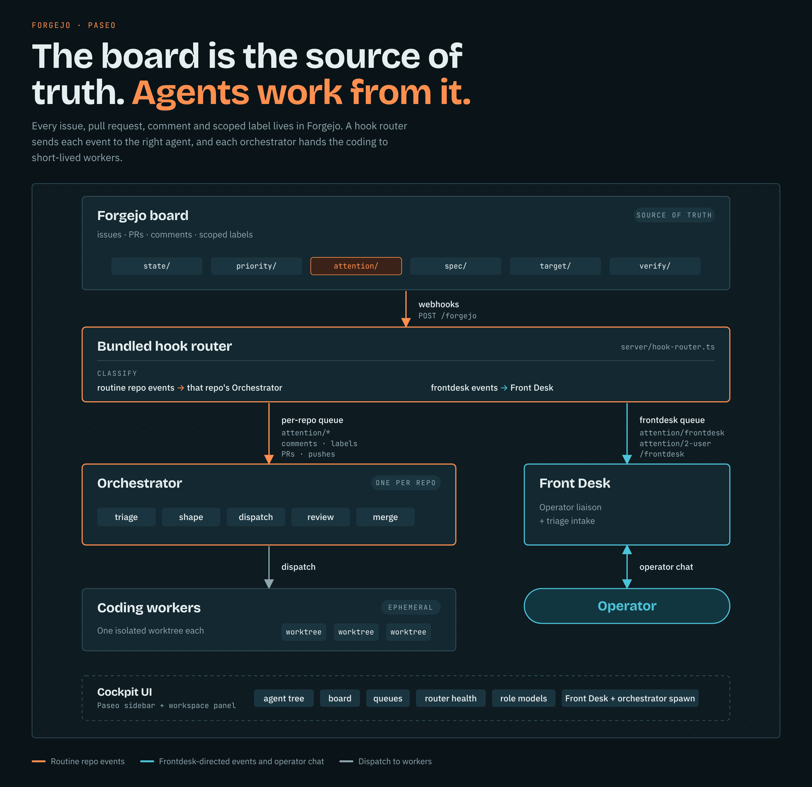
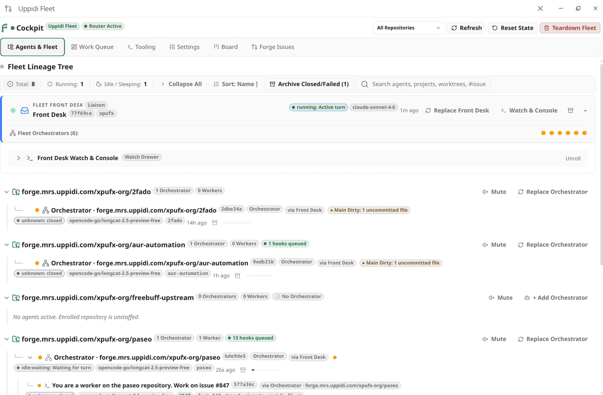
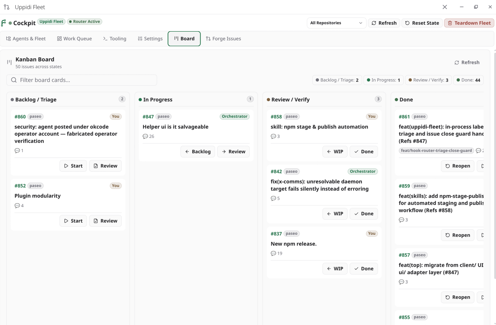
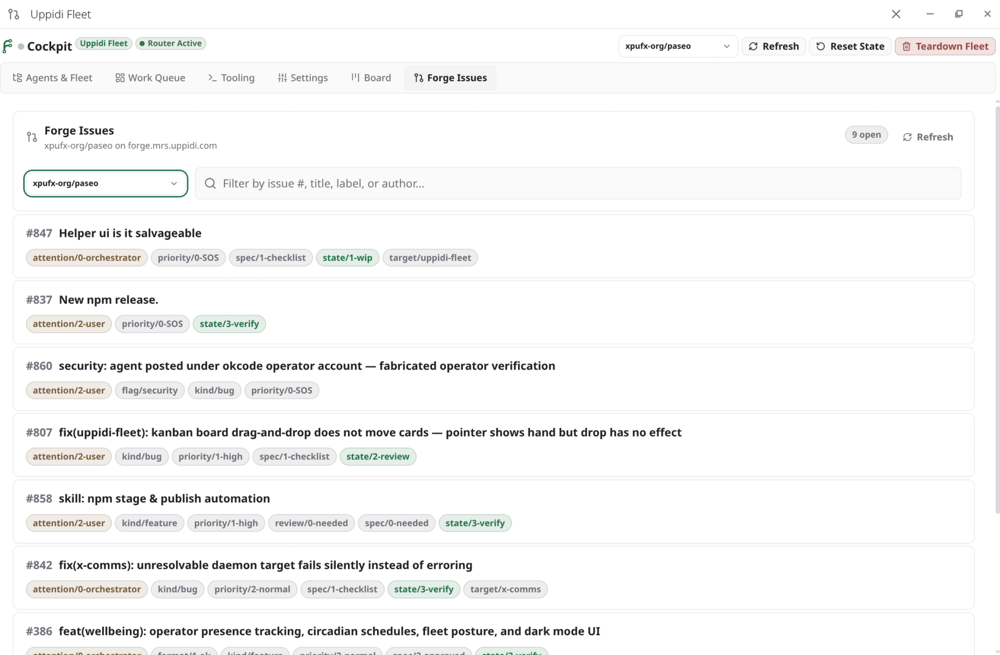
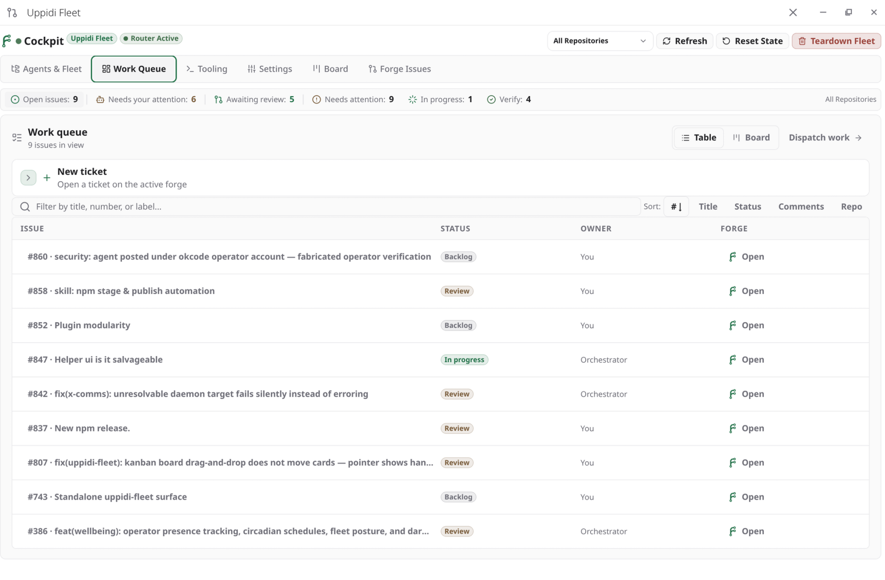
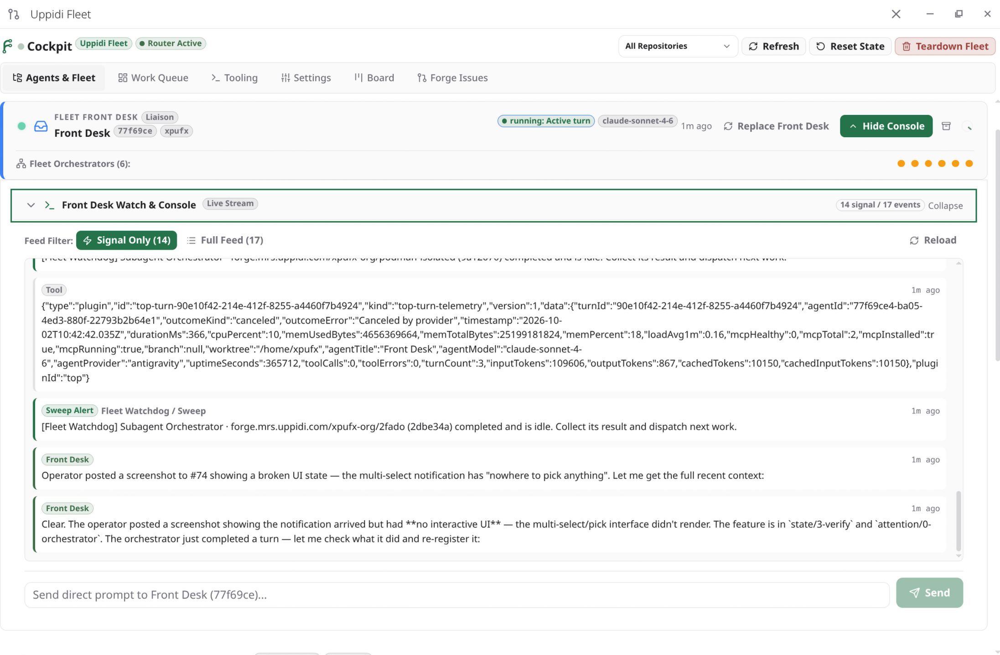
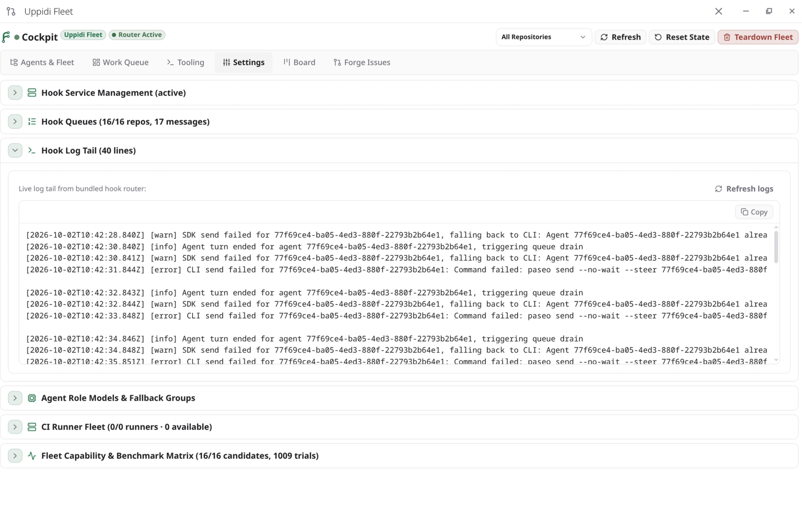
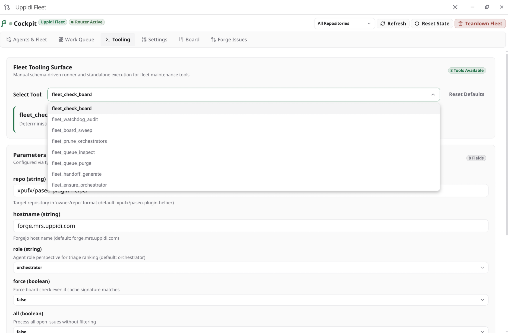

The Concept in One Picture

Screenshots







Four Moving Parts
- The Forge stores all durable state (issues, comments, labels, commits) and emits webhook events when that state changes.
- The Bundled Hook Router receives events, classifies them, queues them per repository, and delivers them over Paseo's transport: routine events go directly to that repository's Orchestrator; frontdesk-directed events go to the Front Desk.
- The Agents do the work. Three roles: Front Desk (operator-facing liaison and triage intake), Orchestrator (one per repo; triage + dispatch + review), and Coding Workers (ephemeral, one worktree each). Behaviour is encoded in Skills, not in the plugin.
- The Cockpit is the Paseo surface that renders the board, the agent tree, the router queues, and controls for spawning Front Desk/orchestrators, muting repos, and editing role models.
The Roles
| Role | How many | Owns | Never does |
|---|---|---|---|
| Front Desk | 0–1 per fleet | Operator-facing liaison and triage intake; takes frontdesk-directed events; routes escalations; registers with the router | Implement code; receive routine per-repo webhooks |
| Orchestrator | One per enrolled repo | Triage, shaping, dispatch, PR pre-flight/merge, board hygiene | Edit source files or check out feature branches itself |
| Coding Worker | One per ticket (ephemeral) | Implements in an isolated git worktree, opens a PR | Touch a checkout the operator is using; scan/self-claim |
Board Lifecycle
A ticket's life is expressed entirely through scoped labels:
state/0-triage → state/1-wip → state/2-review → state/3-verify → state/4-done attention/0-orchestrator ↔ attention/1-agent ↔ attention/2-user ↔ attention/3-ignore
attention/* is the operator's steering channel; state/* is the execution lifecycle; priority/* orders the queue; spec/* is pre-code shaping. Applying a label inside a scope evicts the previous one if created with exclusive: true.
attention/2-user signals that human operator intervention is required. state/3-verify or state/2-review represent execution milestones and never imply operator attention or suppress orchestrator sweeps unless explicitly paired with attention/2-user.
The Cockpit Surface
The plugin registers one primary surface with three tabs:
| Tab | What it shows |
|---|---|
| Agents & Fleet (tree) | Hierarchical view: projects → orchestrators → workers, with deterministic state badges (working / running / permission-prompt / attention-required / sleeping / idle / quota / failed), worktree names, parentage, and per-repo enrolment/mute flags. |
| Work Queue (dashboard) | Open issues from the board with status, owner, and labels; a Fleet Needs Attention board surfaces blocked agents, filter presets (Needs Attention, Triage/Review, In Progress, Verify). |
| Settings | Hook service management (start/stop/restart, listen host + port), links into role-model editing. |
Skills: How the Fleet Thinks
Skills are Markdown instruction sets that Paseo loads on demand. The plugin ships sanitized, production-ready example Skills in examples/skills/:
| Skill | Role | Example File |
|---|---|---|
coding-agent |
Coding worker — implement, verify, open the PR | examples/skills/coding-agent/SKILL.md |
orchestrator |
Orchestrator — triage, decompose, dispatch, pre-flight PRs | examples/skills/orchestrator/SKILL.md |
front-desk |
Front Desk — operator-facing liaison and triage intake | examples/skills/front-desk/SKILL.md |
Installation
From npm (recommended)
paseo plugin add npm:@xpufx/paseo-uppidi-fleetThe npm package is @xpufx/paseo-uppidi-fleet; the plugin installs and displays as uppidi-fleet (the id in paseo-plugin.json).
paseo plugin add xpufx/paseo --path plugins/uppidi-fleetAfter install, the plugin appears as a sidebar item and a workspace panel named Uppidi Fleet, plus a settings screen. The server entry (index.server.ts) registers all RPC handlers and starts the bundled webhook router automatically.
Prerequisites
| Requirement | Notes |
|---|---|
| Paseo ≥ 0.8.0 | Plugin manifest requires it |
| Forgejo or Gitea-family host | Any forgejo/gitea instance; API used is /api/v1 |
| Repository access token | PAT with issue write scope (read:user, read:repository, write:issue; add write:repository if label management returns 403) |
| Agent provider + model | Any provider Paseo supports, per role |
| Host runner | Required for label triage and repository sweeps (Forgejo Actions workflows). A ForgeJo Actions runner with the host backend is preferred. |
| Git remote named for your forge | CLI wrappers resolve board context from origin |
Webhook Router (Backend Daemon)
The router is bundled into the plugin at server/hook-router.ts and started by index.server.ts. It's a plain Node http server — no systemd unit or separate bridge needed.
Ingress & Classification
- Endpoints:
POST /forgejoandPOST /hook(aliases) - Reads
X-Forgejo-Eventheader pingevents return200 {ping:true}— use Forgejo's Test delivery- Derives repository key from payload, normalized to
host/owner/repo - Classifies:
- Front Desk events → special
frontdeskqueue (labelattention/frontdesk,attention/2-user, or comment starting with/frontdesk) - Bypass/SOS events → jumped to head of queue (
priority/0-SOS,flag/stop-work,attention/*, slash commands) - Everything else → repo's normal queue via event coalescing (default 7s debounce, max 20 events)
- Front Desk events → special
Control Endpoints
| Method & Path | Purpose |
|---|---|
GET /health | Liveness + port |
GET /status | Front desk record, paused queues, totals, repo count |
GET /queues | Per-repo queue depth, busy state, orchestrator |
GET/POST /frontdesk | Read/register Front Desk agent |
GET/POST /handoff | Front Desk rotation |
POST /orchestrator | Register orchestrator for a repo |
POST /board-sweep | Run deterministic board check |
POST /queues/:key/pause|resume|drain | Per-queue control |
Gap Analysis — What You Must Supply
The plugin is deliberately minimal; adopting it means filling these gaps:
- No label installer — only a generic seed at
plugins/forges/examples/labels/label-base.yaml(coversstate/,priority/,attention/,spec/,flag/stop-work). No seed fortarget/*orverify/*. - Operational Skills live outside the plugin — production
orchestrator,front-desk,coding-agentskills live in the repo at.agents/skills/. The plugin provides sanitized examples underexamples/skills/for you to adapt. - Action workflows are monorepo-level —
issue-label-triage.ymlandstale-wip-sweep.ymlin.forgejo/workflows/; runner labels and agent account names are environment-specific. - Issues surface is hardcoded — defaults to
FORGEJO_HOST=forge.mrs.uppidi.comand repoxpufx-org/paseo. ExportFORGEJO_HOSTandFORGEJO_TOKENuntil a settings field exists. - Webhook secret not verified —
FORGE_HOOK_SECRETis stored but never validated. Keep listener on loopback or front with authenticating proxy.